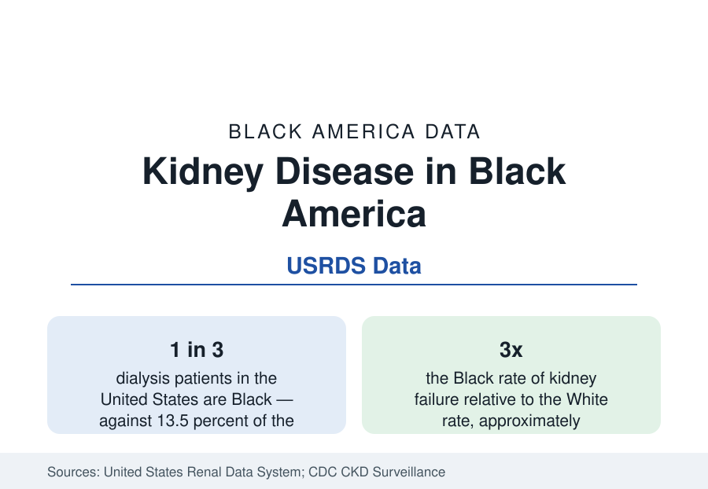

Black Public Health
Kidney Disease and Black Americans: A Third of All Dialysis
Black Americans are 13 percent of the population and roughly a third of the nation's dialysis patients. The kidney data, from early disease to transplant.

Black Americans develop kidney failure — the point at which dialysis or transplantation becomes necessary to sustain life — at roughly three times the rate of White Americans. The consequence is visible in the United States Renal Data System's census of treatment: Black patients form about a third of the nation's dialysis population, against 13.5 percent of the general population, one of the largest representation gaps in all of medicine. The causes run through this section's other data — hypertension and diabetes above all — plus a genetic factor unique to African ancestry that the research of the past decade has documented. This article reports the kidney data.
The Disease Before Failure
Chronic kidney disease — reduced kidney function or kidney damage sustained over time, staged from laboratory values — affects roughly one in six Black adults in the CDC's surveillance estimates, a prevalence broadly similar to the national figure. The disparity is not mainly in who develops kidney disease but in whose disease progresses: Black patients' kidney function declines faster on average in the cohort studies, and the transition to failure comes at younger ages. The two engines of progression are the section's recurring pair — hypertension, which damages the kidney's filtering units directly, and diabetes, the nation's leading cause of kidney failure — both present at the rates the earlier profiles record, and both damaging the kidney silently: kidney disease produces few symptoms until its late stages, so the screening data (urine protein and blood filtration tests in the diabetes and hypertension populations) are the surveillance that matters.
APOL1: The Genetic Chapter
Kidney disease carries this section's clearest gene-environment story. Variants in the APOL1 gene, which rose to high frequency in West African populations because they protect against African sleeping sickness, substantially raise kidney disease risk when inherited from both parents — a genotype carried by roughly one in eight Black Americans. In the cohort data, two-risk-variant carriers develop certain kidney diseases at markedly elevated rates and progress faster, accounting for a meaningful share of the Black excess in non-diabetic kidney failure. The finding reframed the field: part of what statistics long recorded as a racial disparity is an ancestry-linked genetic risk interacting with environment and with the other drivers — and it has practical consequences now in testing and in living-donor evaluation, where APOL1 status has entered the transplant centers' protocols.
Dialysis: The Treatment Landscape
Kidney failure in the United States is treated overwhelmingly by in-center hemodialysis — typically three sessions a week — and the USRDS data describe its Black population: younger on average than the White dialysis population, more likely to have diabetes and hypertension as the attributed cause, and surviving on dialysis at rates that, adjusted for age, run somewhat better than White patients' — a survival pattern the literature notes because it reverses at transplantation access. Home dialysis modalities (peritoneal dialysis and home hemodialysis), associated with quality-of-life advantages, are used by Black patients at lower rates in the treatment data. The dialysis industry is among the most consolidated in American health care, and its facility geography — including facility quality ratings — overlays the neighborhood data of the city profiles.
Transplantation: Where the Gap Reopens
Transplantation is the preferred treatment for eligible patients — better survival, better quality of life, lower long-run cost — and it is where the pathway gaps concentrate. Black patients are referred for transplant evaluation, complete the workup, and are placed on the waiting list at lower rates than White patients with comparable profiles in the registry studies; once listed, they wait longer on average, in part because of blood-type and antibody distributions and organ allocation geography; living-donor transplants, the best outcomes of all, reach Black recipients at a fraction of the White rate — the donor pool is drawn from patients' own networks, carrying the same health burdens. The allocation system has been reformed in the data's own terms in recent years — including a correction for an old estimating equation that systematically delayed Black patients' listing, and a waiting-time restoration for affected candidates — a case, documented in the registry literature, of the data themselves identifying a mechanism of disparity inside the formula.
Reading the Kidney Data
Summarized: similar disease prevalence, triple the failure, a third of all dialysis, slower access to the definitive treatment. Kidney disease is the public health section's most mechanically complete disparity — its causes are measured (pressure, sugar, a gene), its progression is tracked in a national registry patient by patient, and its treatment gaps occur at named, auditable steps. Few datasets in this reference show so clearly where a disparity is manufactured, stage by stage.
More in Black Public Health
Hypertension Among Black Adults: Prevalence, Control, and Consequences
About 55 percent of Black adults have hypertension — the highest rate of any U.S. group. Prevalence, onset, control, and the stroke, heart, and kidney consequences in the data.
Diabetes Among Black Adults: Prevalence and Complications
Nearly one in five Black adults has diabetes, diagnosed or undiagnosed — and its complications fall with particular weight. The CDC data on prevalence, control, and outcomes.
Black Life Expectancy: The Gap at Birth and Its Causes
Black life expectancy at birth is about 73 years, roughly five years below the national figure — the summary measure of every health gap in this section. The CDC data.
Source: CDC Chronic Kidney Disease Surveillance; United States Renal Data System (USRDS) Annual Data Report; National Kidney Foundation.